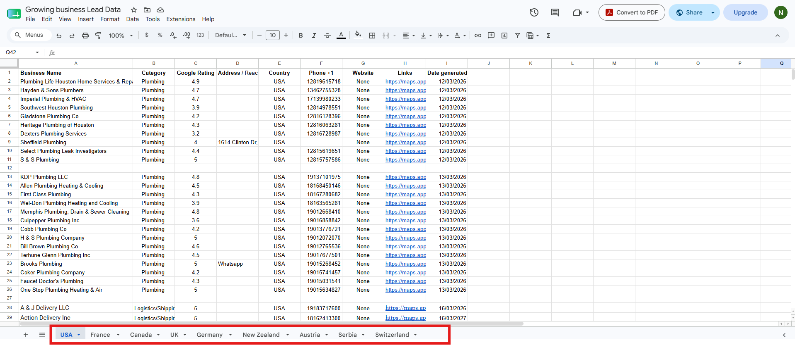

Project 5 — Multi-Country Lead Generation & Prospect Research
During my internship at PUEPR, I supported the Business Development
team by researching and qualifying business prospects across multiple countries.
The objective was to build high-quality outreach lists based on strict qualification
criteria rather than simply collecting company names.
Business Objective
Create a consistent pipeline of qualified businesses that could be contacted for
outreach campaigns while maintaining high data accuracy and meeting daily production
targets.
Project Requirements
- Research 50 qualified businesses every day.
- Maintain a weekly target of 250 businesses.
- Research across 10 different countries.
- Only include businesses with Google ratings of 3.5 stars or higher.
- Exclude businesses that already had websites.
- Ensure every business had at least one reachable contact method.
Countries Researched
- United States
- United Kingdom
- Canada
- Germany
- Austria
- France
- Netherlands
- Switzerland
- Serbia
- New Zealand
Information Collected
- Business Name
- Business Category
- Google Rating
- Business Address
- Country
- Phone Number
- Business Link
- Website Status
- Date Generated
My Responsibilities
- Performed business research using Google Maps.
- Qualified businesses according to project requirements.
- Verified website availability before adding prospects.
- Collected structured business information into Google Sheets.
- Organized prospects into separate country worksheets.
- Maintained consistent daily and weekly production targets.
- Delivered organized datasets ready for Business Development outreach.
Tools Used
- Google Maps
- Google Sheets
- Google Search
- Spreadsheet Management
- Lead Qualification
- Business Research
Evidence
Task Requirements

The ClickUp task outlining the lead generation objectives, qualification rules,
daily targets, weekly goals, and countries assigned for research.
Lead Research Spreadsheet

Google Sheets used to organize qualified businesses across multiple countries.
Each worksheet represented a different country and contained structured business
information ready for outreach activities.
Skills Demonstrated
- Lead Generation
- Prospect Research
- B2B Research
- Google Maps Research
- Business Qualification
- Data Collection
- Spreadsheet Management
- Attention to Detail
- Operations Support
- Business Development Support